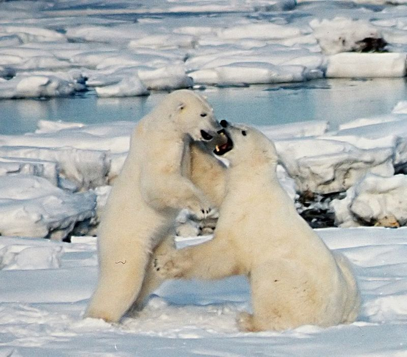
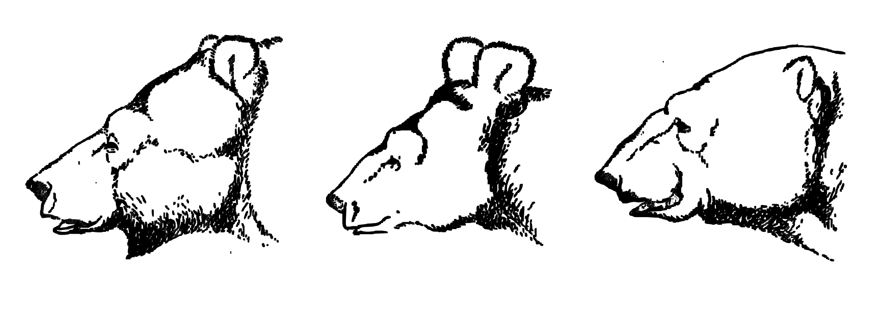
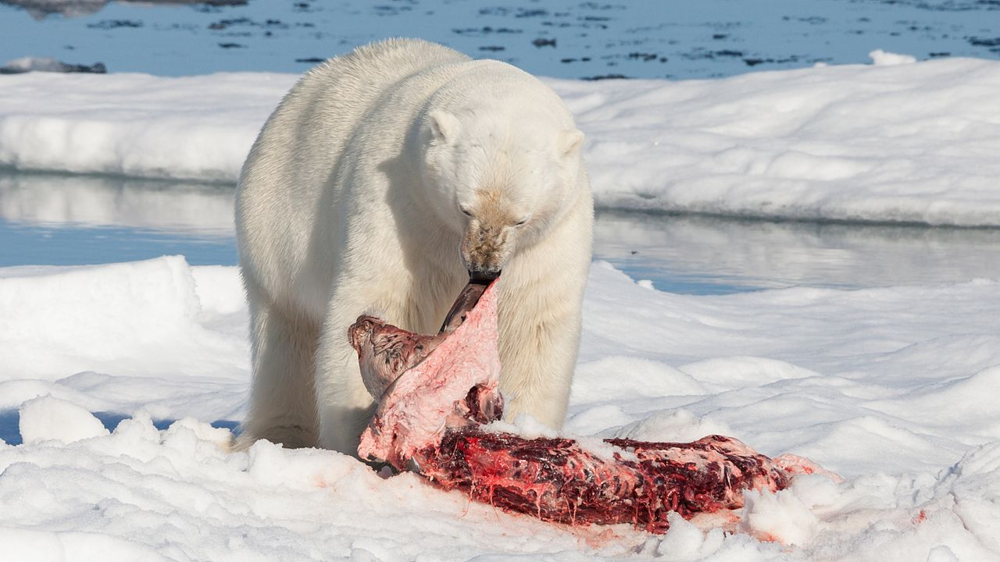

Бе́лый медве́дь, или полярный медведь, северный медведь,ошку́й перевод, нанук, умка (латUrsus maritimus — дословно «медведь морской»), — хищное млекопитающее семейства медвежьих, близкий родственник бурого медведя. Второй по величине сухопутный хищник планеты после гребнистого крокодила. Назван так из-за белой шерсти.
Происхождение вида
Первоначально предполагалось, что белый медведь отделился от бурого около 45—150 тысяч лет назад, вероятно на территории современной Ирландии. Однако последнее исследование показало, что белый медведь отделился от их общего с бурым медведем предка 338—934 тысяч лет назад (в среднем 600 тысяч лет назад), а 100—120 тысяч лет назад в результате скрещивания представителей видов произошла их гибридизация, в результате чего все современные белые медведи являются потомками этих гибридов.Скрещивание белых и бурых медведей происходило в течение длительного периода, в результате чего в популяции бурых медведей обнаруживается 2 % (в некоторых популяциях — от 5 до 10 %) генетического материала белых медведей.
Белые и бурые медведи дают плодовитое потомство, так что они генетически сходны. Однако они не могут долго выживать в экологических нишах друг друга, имеют различную морфологию, метаболизм, социальное поведение, рацион питания и другие фенотипические признаки, что позволяет классифицировать их как разные виды.
Внешний вид
Белый медведь — самый крупный представитель семейства медвежьих и отряда хищных (если не включать в отряд хищных ластоногих). Его длина достигает 3 м, масса до 1 т. Обычно самцы весят 400—450 кг, длина тела 200—250 см. Самки заметно мельче (200—300 кг, 160—250 см). Высота в холке 130—150 см. Самые мелкие медведи водятся на Шпицбергене, самые крупные — в Беринговом море. Белого медведя от других медведей отличают длинная шея и плоская голова. Кожа у него чёрная..jpg) Цвет шубы варьирует от белого до желтоватого; летом мех может желтеть из-за постоянного воздействия солнечного света. Шерсть белого медведя лишена пигментной окраски, и шерстинки полые. Полупрозрачные волоски пропускают только ультрафиолетовые лучи, придавая шерсти теплоизоляционные свойства. При ультрафиолетовой фотосъёмке белый медведь кажется тёмным. Благодаря строению шерстинок белый медведь иногда может «позеленеть». Происходит это в жарком климате (в зоопарках), когда внутри шерстинок заводятся микроскопические водоросли. Подошвы ног покрыты шерстью, что позволяет им не скользить по льду и не мёрзнуть. Между пальцами есть плавательная перепонка, а передняя часть лап оторочена жёсткими щетинками. Крупные когти могут удержать даже сильную добычу
Цвет шубы варьирует от белого до желтоватого; летом мех может желтеть из-за постоянного воздействия солнечного света. Шерсть белого медведя лишена пигментной окраски, и шерстинки полые. Полупрозрачные волоски пропускают только ультрафиолетовые лучи, придавая шерсти теплоизоляционные свойства. При ультрафиолетовой фотосъёмке белый медведь кажется тёмным. Благодаря строению шерстинок белый медведь иногда может «позеленеть». Происходит это в жарком климате (в зоопарках), когда внутри шерстинок заводятся микроскопические водоросли. Подошвы ног покрыты шерстью, что позволяет им не скользить по льду и не мёрзнуть. Между пальцами есть плавательная перепонка, а передняя часть лап оторочена жёсткими щетинками. Крупные когти могут удержать даже сильную добычу
Распространение
Обитает в приполярных областях в северном полушарии Земли. Распространён циркумполярно, на север — до 88° с. ш., на юг — до Ньюфаундленда, на материке — в зоне арктической пустыни до зоны тундр. В Российской Федерации обитает на арктическом побережье и островах в акватории от Баренцева до Чукотского и Берингова морей. Чукотская популяция белого медведя считается самой большой в мире. 
Образ жизни и питания
Обитает на дрейфующих и припайных морских льдах, где охотится на свою основную добычу: кольчатую нерпу, морского зайца, моржа и других морских животных. Ловит он их, подкрадываясь из-за укрытий, или возле лунок: стоит животному высунуть голову из воды, как медведь ударом лапы оглушает добычу и вытаскивает её на лёд.  Иногда снизу опрокидывает льдину, на которой находятся тюлени. С моржоn может справиться только на суше. Иногда нападает даже на дельфинов-белух, запертых льдами в полыньях. В первую очередь пожирает шкуру и сало, остальную тушу — лишь в случае сильного голода. Остатки добычи доедают песцы. При случае подбирает падаль, леммингов, дохлую рыбу, яйца и птенцов, может есть траву и морские водоросли, в обжитых местах питается на помойках. Известны случаи ограбления им складов продовольствия полярных экспедиций. Из добычи белый медведь получает большое количество витамина A (в каких продуктах больше всего содержится этот витамин), который накапливается в его печени. Совершает сезонные кочёвки в соответствии с годовыми изменениями границы полярных льдов: летом отступает вместе с ними ближе к полюсу, зимой перемещается на юг, заходя на материк. Хотя белый медведь держится преимущественно на побережье льдах, зимой он может залегать в берлогу на материке или на островах, иногда в 50 км от моря.В зимнюю спячку продолжительностью 50—80 дней обычно залегают беременные самки. Самцы и яловые самки впадают в спячку на короткий срок и не ежегодно.
Плывущий белый медведь и «зритель» Несмотря на кажущуюся неповоротливость, белые медведи даже на суше быстры и ловки, а в воде легко плавают и ныряют. Очень густая, плотная шерсть защищает тело медведя от холода и намокания в ледяной воде. Важную приспособительную роль играет мощный слой подкожного жира до 10 см толщиной. Белая окраска способствует маскировке хищника. Хорошо развиты обоняние, слух и зрение — свою добычу медведь может увидеть за несколько километров, кольчатую нерпу может учуять за 800 м, а, находясь прямо над её гнездом, слышит малейшее шевеление. По воспоминаниям вице-адмирала А. Ф. Смелкова, плывущий белый медведь, преследуемый субмариной, способен развивать скорость до 3,5 узлов (почти 6,5 км/ч).
Рекордный зафиксированный медвежий заплыв составил 685 км; его по морю Бофорта совершила медведица, плывшая от Аляски полезная информация на север к паковым льдам для охоты на тюленей. За время своего девятидневного заплыва медведица потеряла своего годовалого детёныша и похудела на 20 %. За перемещением животного следили с помощью прикреплённого к нему GPS-маячка
Литература
- Брандт Э. К. Белый медведь // Энциклопедический словарь Брокгауза и Ефрона : в 86 т. (82 т. и 4 доп.). — СПб., 1890—1907.
- Моуэт Ф. Белый призрак / Пер. с англ. // Природа, 1988 — № 3. — С. 34—39.
- Перри Р. Мир белого медведя = The World of the Polar bear / Ричард Перри;Пер. с англ. В. Я. Голанта. — Л.: Гидрометеоиздат, 1974. — 160 с. — 150 000 экз.
- Успенский С. М. Белый медведь. — М.: Наука, 1977. — 80 с. — (Человек и окружающая среда). — 107 000 экз
- Wilson D. E. & Reeder D. M. (eds). Mammal Species of the World. — 3rd ed. — Johns Hopkins University Press[en], 2005. — Vol. 1. — P. 743. — ISBN 0-8018-8221-4. OCLC 62265494.